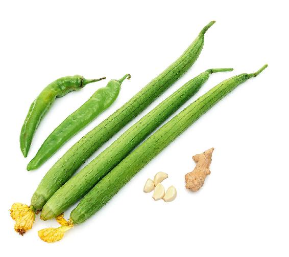
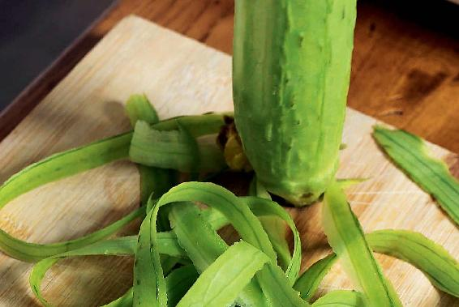
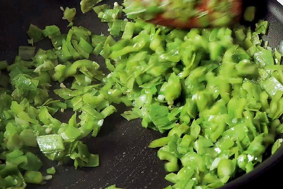
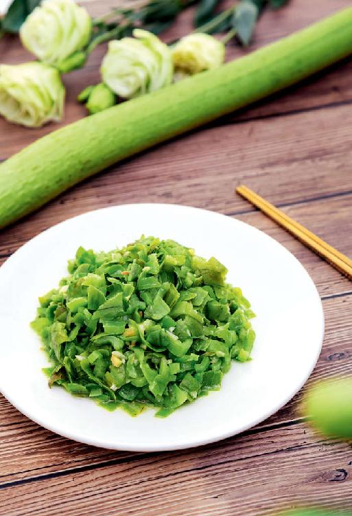

进入立秋后，从处暑节气到白露节气，这一个月的温差会非常大，天气可能还很炎热，像夏天一样，等下了两场秋雨，气温就会大幅度下降。
因此，接下来的一个月，我们既要防身体内的火，又要防外部环境带来的寒气。
防外寒比较容易，注意早晚加衣、添被，这个时节重点是防止后背着凉。
防内火，就要花点心思了。如果身体内有火，年轻朋友的皮肤上就容易长青春痘，或者是一些红肿的疮。还有一些朋友会皮肤过敏，皮肤上红红的。
而对于平时有痔疮的朋友来说，痔疮有可能会发作或者出血。
还有一些朋友会出现口干舌燥的现象，特别是老年人会觉得嘴特别的干。
还有的朋友会鼻子干、红肿，鼻子上长痘痘，或者是变成酒糟鼻。
其实，所有这些症状都是内热在身体的上部和下部发作的表现。
对于这种内热，我们可以通过吃一点丝瓜进行调理。
丝瓜可以帮助身体去火，特别是去心火、清肾火，因此，阴虚火旺的人吃丝瓜是很合适的。
处暑节气后天气还很炎热的话，吃丝瓜的时间还可以延长一点，可以一直吃到9月份。
如果您的火在身体的下半部分，丝瓜应该怎么吃呢？如果说身体的火影响到肠道部分，比如，便秘、痔疮出血，那您就喝丝瓜汤。
丝瓜汤是比较寒凉的，煮汤的时候，您最好是往锅里打个鸡蛋，做成丝瓜蛋花汤，这样就可以达到补泻平衡的目的，汤里还可以再撒一点点胡椒粉。
如果您是炒丝瓜，那就在炒菜的时候放一点蒜，用蒜的热性来平衡丝瓜的寒性。丝瓜汤和炒丝瓜都是很适合便秘的朋友来吃的。
丝瓜有通便的作用，也能预防痔疮，但如果您是脾虚腹泻的朋友，就不要多吃，或者不吃丝瓜肉而只吃丝瓜皮。
丝瓜的皮通常都被人们给刮掉了，其实丝瓜皮有清热解毒的作用，而且还不会滑肠，脾虚腹泻的朋友也可以吃。
丝瓜皮通常是比较硬的，而且还有一种特殊的味道。因此，在做丝瓜的时候，一般不会连皮带肉一起做，而是把它们分开来做。
这道丝瓜皮炒青椒（或酸豆角）是很开胃下饭的，而且也能帮助身体祛暑湿，特别是祛除在这个时候身体内可能蓄积的热毒。
丝瓜皮炒青椒（或酸豆角）

原料：丝瓜皮、青椒（或酸豆角）、姜末、蒜末。

做法：
1.先把丝瓜皮削下来，然后切成碎末，青椒（或酸豆角）也切成碎末。

2.锅里烧少许油，放入姜末、蒜末炸一下，然后再把切好的丝瓜皮末和青椒（或酸豆角）末倒进去翻炒，之后再加一点盐，快炒几下就可以起锅了。

如果您是由身体的热毒造成的皮肤过敏，我建议您多吃炒丝瓜叶来调理。
炒丝瓜叶吃起来是很清香的，您也可以在吃面条的时候，把丝瓜叶放到面汤里焯一下，然后配着面条一起吃，它对于清除身体内的血热毒是很有帮助的。
这三道有关丝瓜的食方，就可以防范处暑节气后的一个月里，可能出现的内热重的现象，特别是其中的丝瓜皮，希望您能尝试一下，因为不仅丝瓜的肉好吃，丝瓜的皮也好吃。
炒丝瓜嫩尖
原料：丝瓜叶。
做法：
1.先把丝瓜叶的嫩尖部分掐下来（菜市场也有卖的）。
2.锅里放一点油，然后放点青花椒进去，再把采好的丝瓜的嫩叶放进锅里翻炒，时间不要太长，炒几下就可以出锅了。